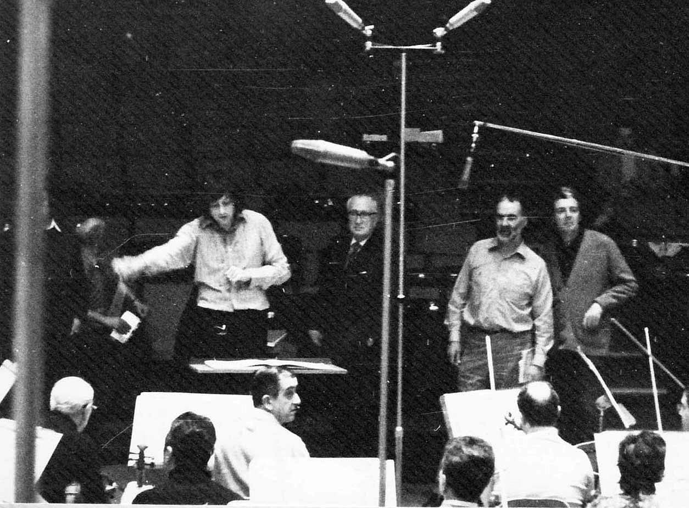

Robin Moore's comprehensive account of Arthur Oldham's unique career as a choral trainer in both London and Edinburgh.
Those who had the privilege of singing with him will always gratefully bear Arthur's mark, and will never forget him.
JOHN BRIDCUT
This book, devoted to Arthur Oldham, one of the greatest English chorus masters in the second half of the twentieth century,
is written from the point of view of a chorister who had the privilege of singing symphonic choral music under Oldham’s direction, first as a member of the LSO Chorus from 1969 to 1974 and then the Edinburgh Festival Chorus from 1974 to 1977.
The book describes how Arthur Oldham became a chorus master, and examines his approach and methods with regard to choral training.
It looks at the origins and development of the Edinburgh Festival Chorus and Oldham’s work with the LSO Chorus.
Pre-eminent among the conductors he worked with are Carlo Maria Giulini and Colin Davis and the book examines his relationship with both.
The list of legendary conductors he also worked with includes Bernstein, Stokowski, Kertesz, Previn, Abbado and Barenboim. To that list two composer-conductors, Britten and Tippett need to be added,
and particularly the former as Arthur was Britten’s only composition pupil.
The book looks at and compares the differing interpretative approaches to the choral masterworks of these conductors and reviews the critical reaction to the resulting concerts and recordings.
It also chronicles the stresses and satisfactions of an amateur chorister who has to hold down a demanding job while singing symphonic choral music at the highest level with major orchestras under the leading maestros of the day.
John Bridcut, the eminent documentary film maker and author of two books on Benjamin Britten, who was a member of the LSO Chorus in the 1970s, contributes a foreword.
RECORDING BERLIOZ
“When the records of the Grande Messe were released the following autumn, it was to considerable acclaim.
There were comments about a lack of numbers in the tenors and basses, the tenors particularly, leading to a feeling of strain at moments, but even this was turned on its head as one critic felt this to be appropriate to the moment.
Two things were generally agreed, Colin Davis’ mastery of the score and the way in which the spacious acoustics of the cathedral had been captured without losing any impact.
There were eight sessions of Berlioz over ten days and barely had we recovered from them when it was time to meet the great Eugene Ormandy. This would be the first of many encounters with Beethoven’s Choral symphony over the next five years.”
Recording Berlioz Grande Messe des Morts Westminster Cathedral November 1969
VERDI WITH BERNSTEIN
“The choir now numbered around two hundred but even this number was not always sufficient to rise above the LSO at full tilt.
At one rehearsal during a marathon day in Hammersmith Town Hall Arthur came bustling forward to say to Lennie that the choir could not be heard.
Bernstein’s reply was to the effect that he did not wish to reduce the orchestral sound any more “because it takes all the fun out of playing!” The relationship between Arthur and Bernstein was not totally amicable as we shall see,
and laid the foundation for the clause in Arthur’s contract for their final Edinburgh collaboration that Arthur was to be seen and not heard at Bernstein’s rehearsals.”
The televised Verdi Requiem conducted by Leonard Bernstein in St. Paul's Cathedral February 1970
RECORDING BELSHAZZAR
“With his tongue ever in his cheek, Walton inscribed in Previn’s score after the performance,
“To André, King of Kings, with my thanks for the best performance ever given of this piece”. When asked if he meant it, Walton replied “Of course not”.
To confirm his opinion at the time, in his Letters he wrote to Walter Legge shortly after that André Previn had given a marvellous performance of what he referred to as B.’s F.
But as his published Letters also show, he did revise that judgement later, whatever he may have thought and said on the night.”
Recording Belshazzar's Feast in Kingsway Hall, with Andre Previn and Christopher Bishop March 1972
BEETHOVEN 9 GIULINI
“On the Sunday we were all in the Festival Hall. Alan Blyth in The Times spoke of “wonderful unanimity of purpose between conductor and his soloists, choir and orchestra”,
that purpose seeming “to unite the lyrical and dramatic aspects of the symphony, which in lesser hands can seem to be at odds” and he went on to describe the singing of the choir as “thrilling,
almost to the point of blatancy”. Overall, he felt the interpretation did not add up to the sum of its considerable parts.”
Beethoven 9 in the Royal Festival Hall with Giulini, November 1972
BELSHAZZAR IN ROME
“The programme was an all Walton celebration, the Violin Concerto with Kyung-Wha Chung and Belshazzar’s Feast with our good friend John Shirley-Quirk.
It had been put together by the British Council’s representative in Rome, Jack Buckley, who had persuaded RAI to stage a 70th birthday tribute, albeit belated, to Walton from the country in which he had been living for thirty years and more.
Walton’s sardonic view was that even after living in Italy for all this time, nobody there knew he was a composer.”

Rome January 1974. Previn, Walton, Arthur and John Shirley-Quirk